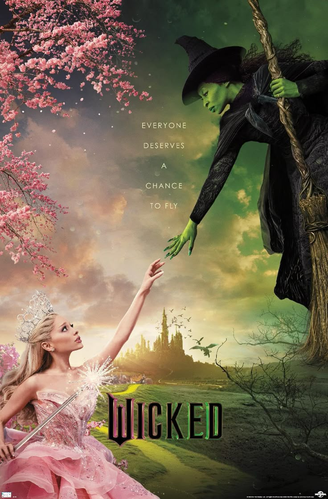

Una historia de amistad, identidad y decisiones que demuestra que las personas no siempre son exactamente como las historias cuentan.

Wicked es un musical con música y letras de Stephen Schwartz y libreto de Winnie Holzman. La historia funciona como una mirada diferente al mundo de El maravilloso mago de Oz y se centra especialmente en Elphaba y Glinda.
Elphaba es una joven inteligente, decidida y diferente a los demás debido a su piel verde. Desde el principio tiene dificultades para encajar en la sociedad de Oz y es frecuentemente juzgada por su apariencia.
Cuando Elphaba llega a la Universidad de Shiz conoce a Glinda, una estudiante popular, elegante y acostumbrada a recibir la atención de los demás. Aunque al principio no se llevan bien, con el tiempo desarrollan una amistad inesperada.
Las dos jóvenes también conocen a Fiyero, un príncipe que cambia la relación entre ellas. Mientras tanto, Elphaba descubre situaciones relacionadas con el gobierno del Mago y comienza a cuestionar lo que sucede en Oz.
La historia muestra cómo una persona puede convertirse en "villana" dentro de la opinión pública aunque sus verdaderas intenciones sean mucho más complejas.
| Año | Evento | Importancia |
|---|---|---|
| 1995 | Publicación de la novela | Gregory Maguire presenta una nueva perspectiva sobre el mundo de Oz. |
| 2003 | Estreno en Broadway | Wicked llega por primera vez al teatro musical. |
| 2004 | Premios Tony | La producción recibe importantes reconocimientos. |
| 2024 | Adaptación cinematográfica | La historia llega nuevamente a una audiencia internacional a través del cine. |
| 2025 | Segunda película | La adaptación cinematográfica continúa la historia. |
| Personaje | Psicología del personaje | Papel en la historia | Famoso que lo interpreta |
|---|---|---|---|
| Elphaba | Es inteligente, independiente, sensible y muy determinada. Tiene dificultades para aceptar las injusticias que observa a su alrededor. | Protagonista de la historia y personaje que cuestiona las decisiones del poder en Oz. | Cynthia Erivo |
| Glinda | Es sociable, carismática y preocupada por su imagen. A lo largo de la historia desarrolla una mayor comprensión de los demás. | Amiga y contraparte de Elphaba. Su relación con ella es uno de los elementos centrales de la historia. | Ariana Grande |
| Fiyero | Al principio parece despreocupado y seguro de sí mismo, pero posteriormente demuestra tener valores y convicciones más profundas. | Interés amoroso de Elphaba y Glinda y personaje importante en los conflictos de Oz. | Jonathan Bailey |
| El Mago de Oz | Es carismático y utiliza su imagen pública para mantener su autoridad. Su comportamiento contrasta con la imagen que presenta ante Oz. | Figura de poder cuya forma de gobernar provoca gran parte del conflicto. | Jeff Goldblum |
| Madame Morrible | Es calculadora, persuasiva y muy hábil para influir en otras personas. | Profesora de Shiz y una de las figuras relacionadas con el poder político de Oz. | Michelle Yeoh |
| Boq | Es amable y busca agradar a los demás, aunque sus decisiones pueden verse afectadas por sus sentimientos. | Estudiante de Shiz y personaje relacionado con Glinda y Nessarose. | Ethan Slater |
| Nessarose | Es sensible, insegura y desea ser reconocida y querida. Su relación con Elphaba también influye en sus decisiones. | Hermana de Elphaba y personaje importante en la evolución de la historia. | Marissa Bode |
| Doctor Dillamond | Es tranquilo, inteligente y preocupado por la discriminación que comienza a afectar a los animales de Oz. | Profesor de Shiz que ayuda a Elphaba a comprender lo que está sucediendo. | Peter Dinklage |
"Because I knew you, I have been changed for good."
Una frase relacionada con la manera en que la amistad entre Elphaba y Glinda cambia la vida de ambas.
¿Qué personaje de Wicked te parece más interesante?
| Número | Canción | Personaje(s) |
|---|---|---|
| 1 | No One Mourns the Wicked | Elenco |
| 2 | Dear Old Shiz | Elenco |
| 3 | The Wizard and I | Elphaba |
| 4 | What Is This Feeling? | Elphaba y Glinda |
| 5 | Popular | Glinda |
| 6 | I'm Not That Girl | Elphaba |
| 7 | One Short Day | Elphaba y Glinda |
| 8 | Defying Gravity | Elphaba y Glinda |
| 9 | For Good | Elphaba y Glinda |
| 10 | No Good Deed | Elphaba |
Dato mágico: El color verde de Elphaba se convirtió en uno de los elementos visuales más reconocibles de Wicked.
Palabra clave: Shiz — la universidad donde comienza gran parte de la relación entre Elphaba y Glinda.
Elemento simbólico: La gravedad representa una de las barreras que Elphaba decide desafiar.
Contraste: El verde de Elphaba y el estilo brillante de Glinda ayudan a representar sus personalidades diferentes.
Amistad: La relación entre Elphaba y Glinda es uno de los elementos fundamentales de la historia.
Wicked — porque conocer la historia completa puede cambiar la manera en que vemos a un supuesto villano.